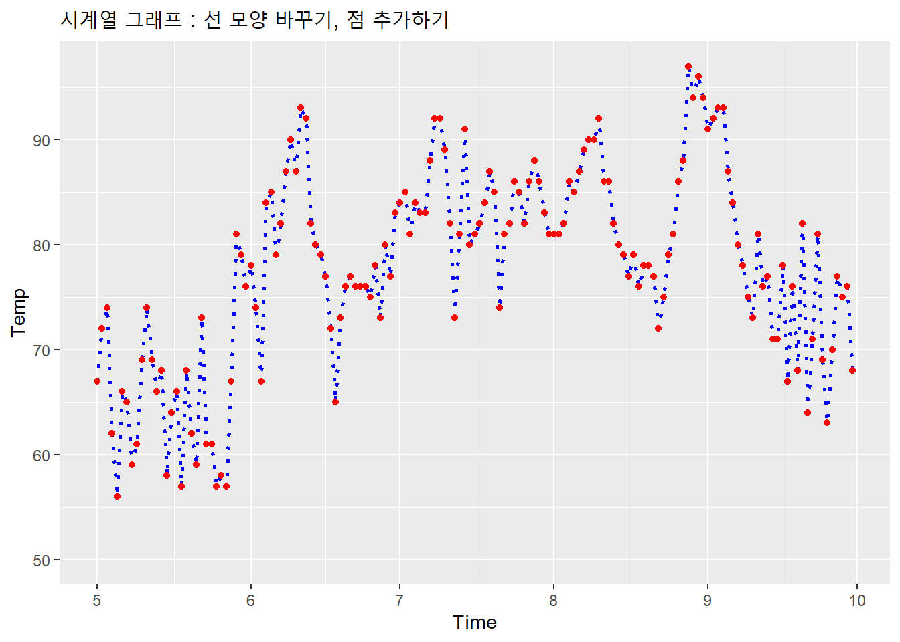

11.3 선 그래프와 시계열 그래프
선 그래프(Line Graph)는 x축의 연속형 변수(또는 (순서나 크기가 있는 이산형 변수, ordered factor)의 변화에 따른 y축의 연속형 변수의 변화를 선으로 이어서 보여주는 그래프입니다.
이 떄 x축이 시간의 순서이면 시계열 그래프(Time Series Graph)가 됩니다.
11.3.1 데이터 세트
Base패키지에 들어있는 airquality 데이터 프레임(10을 가지고 시계열 그래프를 그려보도록 하겠습니다.
airquality 데이터 프레임은 1973년 5월부터 9월달까지 뉴욕의 공기의 Ozone, Solar, Wind, Temp를 매일(Daily) 측정한 데이터 세트입니다. 결측값이 없는 Wind와 Temp를 가지고 시계열 그래프를 그려보겠습니다.
library(ggplot2)
# airquality 데이터 세트의 구조를 확인합니다.
str(airquality)## 'data.frame': 153 obs. of 6 variables:
## $ Ozone : int 41 36 12 18 NA 28 23 19 8 NA ...
## $ Solar.R: int 190 118 149 313 NA NA 299 99 19 194 ...
## $ Wind : num 7.4 8 12.6 11.5 14.3 14.9 8.6 13.8 20.1 8.6 ...
## $ Temp : int 67 72 74 62 56 66 65 59 61 69 ...
## $ Month : int 5 5 5 5 5 5 5 5 5 5 ...
## $ Day : int 1 2 3 4 5 6 7 8 9 10 ...# 결측값 여부 확인 : 결측값의 갯수 확인
sum(is.na(airquality$Ozone))## [1] 37sum(is.na(airquality$Solar.R))## [1] 7sum(is.na(airquality$Wind))## [1] 011.3.2 기본 선 그래프 그리기
기본 선 그래프는 geom_line() 함수를 이용하여 그릴 수 있습니다.
그런데 ggplot() 함수의 aes() 부분에서 변수를 지정할 때, X변수와 Y 변수의 데이터 타입에 유념해야 합니다.
Y 변수는 반드시 숫자형이어야 합니다. 그러나 X 변수는 숫자형, 문자형, 날짜형 등의 형태가 될 수 있습니다. X 변수가 날짜형인 경우의 선 그래프가 바로 시계열 그래프가 되는 것입니다.
각각의 경우에 대해서 살펴 보겠습니다.
11.3.2.1 X 변수가 숫자형인 경우
Y 변수를 온도(Temp)로 하고, X 변수는 airquality 데이터 세트에 있는 숫자형 컬럼 중의 하나인 Wind로 해서 선 그래프를 그려보겠습니다.
## X가 숫자형인 경우의 선 그래프
ggplot(airquality, # 데이터 세트를 지정합니다.
aes(x = Wind, # x 축의 변수를 지정합니다. (Wind : 숫자형)
y = Temp)) + # y 축의 변수를 지정합니다. (Temp : 숫자형)
geom_line()ggtitle("기본 선 그래프 : 숫자형 X 변수") ## $title
## [1] "기본 선 그래프 : 숫자형 X 변수"
##
## attr(,"class")
## [1] "labels"11.3.2.2 X 변수가 문자형인 경우
airquality 데이터 세트는 모든 컬럼이 숫자형으로만 되어 있는 데이터 프레임입니다. 특히, Month 컬럼과 Day 컬럼 까지도 정수형(int)으로 되어 있습니다.
이 Month 컬럼과 Day 컬럼을 결합하여 TIme 이라는 문자형 컬럼을 생성하고, 이 Time 컬럼을 X 변수로 지정해서 선 그래프를 그려 보겠습니다.
먼저 Month 변수와 Day 변수를 합쳐서 Time이라는 새로운 문자형 변수를 만들어 보겠습니다.
# 문자형 Time 변수 생성
# Month, Day 컬럼을 문자형(Character)으로 변형하여 새로운 컬럼 생성
airquality <- transform(airquality,
Month.ch_temp = as.character(Month),
Day.ch_temp = as.character(Day))
# Month.ch_temp와 Day.ch_temp의 한 자리를 두 자리로 변경
# 예) 1 -> 01, 2 -> 02, 3 -> 03,...
airquality <- transform(airquality,
Month.ch = paste("0", Month.ch_temp, sep=""),
Day.ch = ifelse(Day.ch_temp == "1", "01",
ifelse(Day.ch_temp == "2", "02",
ifelse(Day.ch_temp == "3", "03",
ifelse(Day.ch_temp == "4", "04",
ifelse(Day.ch_temp == "5", "05",
ifelse(Day.ch_temp == "6", "06",
ifelse(Day.ch_temp == "7", "07",
ifelse(Day.ch_temp == "8", "08",
ifelse(Day.ch_temp == "9", "09",
Day))))))))))
# Month.ch_temp와 Day.ch_temp를 paste() 함수로 결합하여 문자형 Time 변수 생성
airquality <- transform(airquality,
Time = paste(Month.ch, Day.ch, sep=""))
# airquality의 구조 보기
str(airquality)## 'data.frame': 153 obs. of 11 variables:
## $ Ozone : int 41 36 12 18 NA 28 23 19 8 NA ...
## $ Solar.R : int 190 118 149 313 NA NA 299 99 19 194 ...
## $ Wind : num 7.4 8 12.6 11.5 14.3 14.9 8.6 13.8 20.1 8.6 ...
## $ Temp : int 67 72 74 62 56 66 65 59 61 69 ...
## $ Month : int 5 5 5 5 5 5 5 5 5 5 ...
## $ Day : int 1 2 3 4 5 6 7 8 9 10 ...
## $ Month.ch_temp: chr "5" "5" "5" "5" ...
## $ Day.ch_temp : chr "1" "2" "3" "4" ...
## $ Month.ch : chr "05" "05" "05" "05" ...
## $ Day.ch : chr "01" "02" "03" "04" ...
## $ Time : chr "0501" "0502" "0503" "0504" ...이제 ggplot() 함수의 x 축에 날짜(Time) 변수를 그리고 y 축에 온도(Temp) 변수를 지정한 다음, geom_line() 함수를 이용하여 선 그래프를 그려 보겠습니다.
# 선 그래프 그리기 : 문자형 X 변수
ggplot(airquality, # 데이터 세트를 지정합니다.
aes(x = Time, # x 축의 변수를 지정합니다. (Time : 문자형)
y = Temp)) + # y 축의 변수를 지정합니다. (Temp : 숫자형)
geom_line() + # 선 그래프를 그립니다.
ggtitle("선 그래프 : 문자형 X 변수")## geom_path: Each group consists of only one observation. Do you need to adjust
## the group aesthetic?위의 스크립트를 실행하면 앞에서의 경우와 달리 경고 메시지가 발생하면서 선 그래프가 표시가 되지 않습니다.
이것은 X 변수가 문자형 변수이기 때문입니다. 이 문제를 해결하기 위해 ggplot() 함수의 aes() 함수의 모수로 group = 1 을 삽입해 줍니다.
# 기본 선 그래프 : 문자형 X 변수 (group = 1) 추가
ggplot(airquality,
aes(x = Time,
y = Temp,
group = 1)) +
geom_line() +
ggtitle("기본 선 그래프 : 문자형 X 변수 (group = 1 추가)")선 그래프의 X축으로 날짜(Time)의 데이터인 0501 ~ 0930이 표시되고, Y축에는 온도(Time)가 표시되는 선 그래프가 그려집니다. 그런데 X 축의 값들이 서로 겹쳐져서 잘 볼 수가 없네요…. (엄밀히 말하면 이 그래프는 시계열 그래프라 할 수 없습니다.)
11.3.2.3 X 변수가 날짜형인 경우
airquality_May 데이터 세트의 날짜(Time) 컬럼을 날짜형(Date 형)으로 변형시켜서 선 그래프를 그려 보겠습니다.
이제 이 선 그래프는 X축이 날짜형 변수이기 떄문에 시계열 그래프가 작성되는 것입니다.
## 시계열 그래프 그리기 : 날짜형 X 변수
# airquality의 Time 컬럼을 날짜형으로 변형합니다.
airquality$Time <- as.Date(airquality$Time, format = "%m%d")
# 시계열 그래프 그리기
ggplot(airquality,
aes(x = Time, # X축의 Time 변수는 '날짜형'입니다.
y = Temp)) +
geom_line() +
ggtitle("시계열 그래프 : 날짜형 X 변수")이제 이 그래프가 바로 시계열 그래프입니다. X 의 날짜가 적당한 날짜 간격으로 표시가 되어 보기도 좋습니다.
11.3.3 시계열 그래프의 옵션 설정하기
11.3.3.1 Y축 값의 범위 조절하기
시계열 그래프를 보면 y축을 ggplot2가 자동으로 계산해서 적정 범위를 설정해주었습니다만, 경우에 따라서는 사용자가 강제로 특정 범위를 설정해주고 싶을 때가 있습니다. 아래는 ylim()을 이용해서 50 ~ max(y) 값 까지 y축 범위를 설정한 예시입니다.
# 시계열 그래프 : Y축 값의 범위 제한
# y축 범위 설정 50 ~ max
ggplot(airquality,
aes(x = Time,
y = Temp)) +
geom_line() +
ylim(50, max(airquality$Temp)) + # Y 축의 값의 범위를 제한합니다.
ggtitle("시계열 그래프 : Y축 값의 범위 제한")11.3.3.2 선 모양 바꾸고, 점 추가하기
시계열 그래프의 선 모양을 바꾸고 점을 추가할 수도 있습니다.
선의 모양은 geom_line() 함수의 모수인 linetype에 색의 번호(정수)나 이름을 지정할 수 있습니다.11
점은 geom_point() 함수를 이용하여 추가할 수 있으며, 기본 버블 그래프에서도 살펴 본 바와 같이 점의 모양은 shape 모수를 이용하여 변경할 수 있습니다 (0 ~ 25 사이의 정수).
# 시계열 그래프 : 선 모양 바꾸기, 점 추가하기
ggplot(airquality,
aes(x = Time,
y = Temp)) +
geom_line(linetype = "dotted", # 선 모양 : 점선, 크기 = 1, 색 = 파란색
size = 1,
colour = "blue") +
geom_point(size = 1.5, # 점 : 19번 모양, 크기 = 1.5, 테두리 색 = 빨강
shape = 19,
colour = "red") +
ylim(50, max(airquality$Temp)) +
ggtitle("시계열 그래프 : 선 모양 바꾸기, 점 추가하기") 
11.3.4 그룹별 시계열 그래프 그리기
월별 시계열 그래프를 작성해 보겠습니다.
월별 시계열 그래프를 그리기 위해서는 정수형의 Month 컬럼을 요인형으로 변경해야 합니다. 이는 as.factor() 함수로 쉽게 변형할 수 있습니다.
# Month 컬럼을 요인형으로 변형하기
airquality$Month <- as.factor(airquality$Month)이제 월별 시계열 그래프를 ggplot() 함수 내의 aes() 함수에 모수를 지정하여 그리는 방법, facet_grid() 함수를 이용하는 방법 그리고 facet_wrap() 함수를 이용하는 방법으로 작성할 수 있습니다.
11.3.4.1 aes() 함수의 모수 이용
이 절에서는 ggplot() 함수 내의 aes() 함수의 모수인 group과 colour 를 사용하여 그룹별로 시계열 그래프 그려 보겠습니다. aes() 함수 내에 group = Month, colour = Month를 추가해 주면 됩니다.
# 월별 시계열 그래프 : aes() 함수 이용
ggplot(airquality,
aes(x = Time,
y = Temp,
group = Month, # 그룹 변수로 Month를 지정합니다.
colour = Month)) + # 그룹별 선의 색을 지정합니다.
geom_line(linetype = "dotted", # colour 모수를 제거해 줍니다.
size = 1) +
geom_point(size = 1.5,
shape = 19) + # colour 모수를 제거해 줍니다.
ylim(50, max(airquality$Temp)) +
ggtitle("월별 시계열 그래프 : aes() 함수 이용") 11.3.4.2 facet_grid() 함수 이용
# 월별 시계열 그래프 : facet_grid() 함수 이용
ggplot(airquality,
aes(x = Time,
y = Temp,
group = Month,
colour = Month)) +
geom_line(linetype = "dotted",
size = 1) +
geom_point(size = 1.5,
shape = 19) +
ylim(50, max(airquality$Temp)) +
ggtitle("월별 시계열 그래프 : facet_grid() 함수 이용") +
facet_grid( . ~ Month) # facet_grid() 함수 이용# 월별 시계열 그래프 : facet_grid() 함수 이용
ggplot(airquality,
aes(x = Time,
y = Temp,
group = Month,
colour = Month)) +
geom_line(linetype = "dotted",
size = 1) +
geom_point(size = 1.5,
shape = 19) +
ylim(50, max(airquality$Temp)) +
ggtitle("월별 시계열 그래프 : facet_grid() 함수 이용") +
facet_grid(Month ~ .) # facet_grid() 함수 이용11.3.4.3 facet_wrap() 함수 이용
# 월별 시계열 그래프 : facet_wrap() 함수 이용
ggplot(airquality,
aes(x = Time,
y = Temp,
group = Month,
colour = Month)) +
geom_line(linetype = "dotted",
size = 1) +
geom_point(size = 1.5,
shape = 19) +
ylim(50, max(airquality$Temp)) +
ggtitle("월별 시계열 그래프 : facet_wrap() 함수 이용") +
facet_wrap( ~ Month) # facet_wrap() 함수 이용11.3.5 Theme의 사용
히스토그램에서 Theme을 사용하였듯이, 시계열 그래프에서도 Theme을 사용할 수 있습니다.
다음의 예는 앞서 작성한 월별 시계열 그래프에 히스토그램에서 Theme으로 사용한 ggplot2::theme_classic() + 이하 부분을 복사해서 붙여 넣기한 것입니다.
# 웗별 시계열 그래프 : Theme의 사용
ggplot(airquality,
aes(x = Time,
y = Temp,
group = Month,
colour = Month)) +
geom_line(linetype = "dotted",
size = 1) +
geom_point(size = 1.5,
shape = 19) +
ylim(50, max(airquality$Temp)) +
ggtitle("웗별 시계열 그래프 : Theme의 사용") +
ggplot2::theme_classic() + # 그래프 테마 지정
ggplot2::theme(axis.title.x = element_text(size = 10,
face = "italic",
color = "gray",
angle = 0,
vjust = 0.5),
axis.title.y = element_text(size = 10,
face = "bold.italic",
color = "gray",
angle = 0,
vjust = 0.5)) + # X축과 Y축의 서식 스타일 지정
ggplot2::scale_y_continuous(labels = scales::comma) # Y 값의 천단위에 콤마 표시## Scale for 'y' is already present. Adding another scale for 'y', which will
## replace the existing scale.